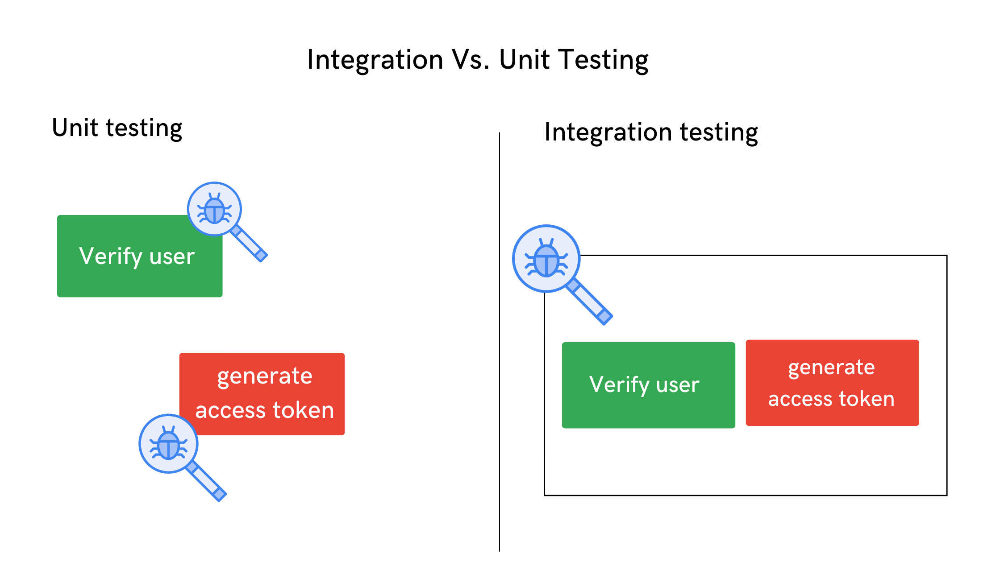
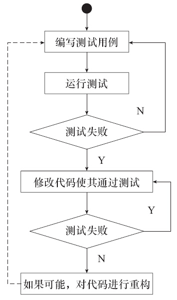

Pythonic Test
Introduction to Unit/Integration Test
1 Unit Test
1.1 Example
The purpose of unit test is to ensure the correctness of a code unit in a project. For example, when we write a function:
def add(x, y):
return x + yWe find the easiest way to avoid bugs is to write a unit test like:
if __name__ == "__main__":
assert add(1, 2) == 3
assert add(1, -1) == 02 Integration Test
2.1 Example

The purpose of integration test of testing is to expose defects in the interaction between these software modules when they are integrated. Here priority is to be given for the integrating links rather than the unit functions which are already tested.
For example, application has 2 modules say ‘Login Page’, ‘Mailbox’ and each of them is integrated logically. Here do not concentrate much on the Login Page testing as it’s already been done in Unit Testing. But check how it’s linked to the Mail Box Page.
| Test Case ID | Test Case Objective | Test Case Description | Expected Result |
|---|---|---|---|
| 1 | Check the interface link between the Login and Mailbox module | Enter login credentials and click on the Login button | To be directed to the Mail Box |
2.2 Methods
Big Bang Testing
Big Bang Testing is an integration testing approach in which all the components or modules are integrated together at once and then tested as a unit. (pros: convenient for small systems)
Incremental Testing
In the Incremental Testing approach, testing is done by integrating two or more modules that are logically related to each other and then tested for proper functioning of the application. Then the other related modules are integrated incrementally and the process continues until all the logically related modules are integrated and tested successfully.
2.3 Guidelines for Integration Testing
- First, determine the Integration Test Strategy that could be adopted and later prepare the test cases and test data accordingly.
- Study the Architecture design of the Application and identify the Critical Modules. These need to be tested on priority.
- Study the Architecture design of the Application and identify the Critical Modules. These need to be tested on priority.
- After the test cases, it’s the test data which plays the critical role.
- Always have the mock data prepared, prior to executing. Do not select test data while executing the test cases.
3 Tool: Pytest
4 Test-Driven Development
Always write the test examples before coding.
